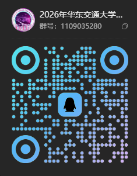

华东交通大学 · 学生科技创新团队
East China Jiaotong University
Genesis 起源智能车队
求真与细，成事以恒
面向智能车竞赛、电子设计竞赛、机器人大赛等自动化、电气、电子信息、计算机多学科融合相关竞赛，持续建设集算法、电控、视觉、机械与软件协同研发于一体的学生科技创新团队。
About Genesis
实验室介绍
华东交通大学“Genesis 起源智能车队”依托电气与自动化工程学院建设，由杨云老师指导，是一支以本科生为主体的学生科技创新团队。
团队定位
车队现有成员24人，均为本科生。团队面向智能车竞赛、电子设计竞赛、机器人大赛等自动化、电气、电子信息、计算机多学科融合相关竞赛，持续建设集算法、电控、视觉、机械与软件协同研发于一体的学生科技创新团队。
过去一年中，团队坚持以赛促学、以赛促研、以赛促创，在多项国家级、省级赛事中取得优异成绩，共获全球校园人工智能算法精英大赛国家一等奖、全国大学生电子设计竞赛国家二等奖等国家级奖项5项，江西省大学生智能汽车竞赛一等奖等省级奖项11项。2026年暑假，车队在第二十一届全国大学生智能汽车竞赛中取得历史最佳成绩：走马观碑组与智慧城市 Robotaxi 组获全国一等奖，疯狂电路组与人工智能模型组获全国二等奖；疯狂电路组、走马观碑组和人工智能模型组同时获华东赛区一等奖，智慧城市 Robotaxi 组获选拔赛一等奖。
车队始终秉承“求真与细，成事以恒”的队训，将专业学习、工程实践与创新探索紧密结合。队员们在算法技术、嵌入式控制、硬件电路与机械结构设计等方向持续攻关，并通过“一周一会”等常态化交流机制传承经验、夯实基础。
实验室位置
华东交通大学南区基础实验大楼31栋102
智行智能汽车实验室
学院平台
依托华东交通大学电气与自动化工程学院建设，由学院骨干教师指导。
以赛促学
通过竞赛任务牵引学习、研发、调试与复盘，提升真实工程实践能力。
传帮带机制
老队员通过常态化交流帮助新队员答疑解惑、快速融入竞赛节奏。
Team
成员风采
后续可替换为真实队员头像、姓名、年级、专业和负责方向。
Research & Engineering
技术方向
围绕全国大学生智能汽车竞赛的完整研发链路，车队持续开展感知、决策、控制、嵌入式、硬件、机械与测试工具建设。各方向既独立攻关，也通过明确接口和整车联调形成一套可验证、可复现、可传承的工程体系。
Competition Teams
历年参赛情况
华东交通大学 Genesis 起源智能车队历届参赛与获奖名录
Awards
荣誉奖项
建议按年份维护比赛名称、获奖等级、组别、指导老师、成员和证书照片。
Q&A
答疑问答
为对车队感兴趣的同学集中解答招新、基础要求、组别选择、训练安排和比赛准备等问题。
常见问题
Updates
车队动态
记录车队比赛、训练、技术分享、招新、团建活动与阶段性成果，展示团队成长过程。
Join Us
加入 Genesis 起源
这里不要求你一开始就会写完整的控制算法、独立画板或设计整车结构。我们更看重好奇心、持续投入和解决真实问题的意愿。只要愿意从基础开始，在一次次实验、调试和复盘中积累，你就能逐步参与一辆智能车从方案到完赛的全过程。
车队以实际竞赛任务为牵引，日常学习不只停留在课堂知识和教程复现。你会接触需求分析、方案讨论、代码与硬件实现、整车联调、现场排障和赛后总结，也会和不同专业、不同方向的同学协作，把一个想法真正做成能够稳定运行的作品。
我们期待这样的你
基础薄弱并不可怕，重要的是愿意主动查资料、提问题，并把学到的内容真正动手验证。
调车和工程实践常常需要反复试错，希望你能记录现象、分析原因，而不是遇到困难就放弃。
尊重队友的工作，及时同步进度，主动沉淀代码、图纸和调试记录，让经验能够继续传承。
你可以选择的方向
视觉组图像处理、目标识别与路径感知
电控组嵌入式开发、运动控制与整车联调
硬件组电路设计、PCB、焊接测试与故障排查
机械组结构设计、三维建模、加工装配与轻量化
算法与软件仿真、数据分析、上位机与工具开发
综合管理项目统筹、宣传运营、赛事记录与团队建设
Recruitment Guide
招新基本信息
- 招新对象
- 面向大一至大二本科生，欢迎自动化、电气、电子信息、计算机、机械等相关专业及其他感兴趣的同学报名。
- 基础要求
- 不设置“必须有竞赛经验”的门槛。具备基本的自主学习能力、责任心和稳定投入时间即可。
- 培养方式
- 基础培训、方向实践、阶段任务、项目答辩和正式竞赛备赛相结合，由高年级成员提供经验指导。
- 实验室地点
- 华东交通大学南区基础实验大楼31栋102，智行智能汽车实验室。
- 报名与咨询
-

扫描二维码加入 2026 年招新群
QQ群：1109035280
加入流程
- 01了解方向
浏览成员、技术方向和历年参赛内容，选择自己最感兴趣的方向。
- 02参加招新
填写报名信息，参加车队宣讲、实验室开放或方向交流。
- 03完成选拔
根据方向完成基础任务，展示实现过程、问题记录和复盘思路。
- 04进入培养
通过选拔后参与专项训练与项目协作，逐步进入正式备赛。
暂未开放
Selection Task
选拔赛题预留区
参加车队选拔的同学须报名并参加 2026 年华东交通大学校“双基”智能车竞赛传统竞速组，完成报名后即可进入选拔赛题阶段。正式开放后，这里将发布各方向选拔任务、提交材料、评分维度、截止时间和答疑方式，重点考察学习过程、工程实现、问题排查与复盘表达能力。
Selection Tasks
选拔赛题
参加选拔的同学须报名并参加 2026 年华东交通大学校“双基”智能车竞赛传统竞速组。选拔赛题暂未开放，开放后将在本页面发布任务、提交要求、评分维度和截止时间。
选拔说明
当前内容为预留模板，不作为正式选拔要求。完成校赛报名后，请关注招新群和本页面通知；正式赛题发布后，再按所选方向完成任务并提交材料。
- 提交内容
- 源码、设计说明、调试记录、演示视频或实物照片。
- 提交方式
- 请替换为指定邮箱、QQ群文件或在线表单链接。
- 截止时间
- 请替换为本年度选拔截止日期。
智能车路径跟踪仿真
基于给定赛道点列或自建路径，实现车辆轨迹跟踪仿真，输出误差曲线、控制量变化和简短分析。
- 完成路径读取、目标点搜索和控制器设计。
- 提交代码、运行截图和参数说明。
- 进阶：加入速度规划或扰动测试。
传感器采集与电路调试
完成一个传感器采集或电机控制小任务，说明接线、通信方式、数据处理和调试过程。
- 提交原理说明、代码和测试结果。
- 记录遇到的问题和排查步骤。
- 进阶：绘制简单接口板或保护电路。
赛道识别或结构设计小任务
视觉方向完成基础图像处理与目标提取；机械方向完成传感器支架或车体安装结构建模。
- 视觉：提交处理流程、效果图和误检分析。
- 机械：提交模型截图、尺寸说明和装配考虑。
- 进阶：结合真实场景做鲁棒性测试。